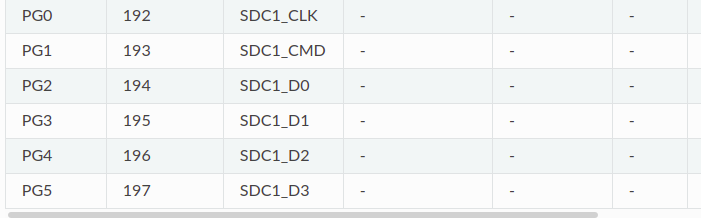

Lichee_05设备树
一、设备树
linux使用设备树来管理device，我们之前使用的设备树是sun8i-v3s-licheepi-zero-dock.dts，根据设备树在板卡的/sys/firmware/devicetree/base会生成相对应的属性文件，板卡上存在一个三色的led，我们可以用它来测试驱动，但是该部分led在系统启动后便已经正常点亮，因此需要查看该部分原因。
 经过分析，其中RGBled的引脚与MMC1的引脚发生了冲突，因此导致了LED上电之后会正常启动，那么应该禁止其在设备树中的使能。修改
经过分析，其中RGBled的引脚与MMC1的引脚发生了冲突，因此导致了LED上电之后会正常启动，那么应该禁止其在设备树中的使能。修改sun8i-v3s-licheepi-zero-dock.dts，删除其MMC1中的status = “okay”;代码如下：
&mmc1 {
pinctrl-0 = <&mmc1_pins>;
pinctrl-names = "default";
broken-cd;
bus-width = <4>;
vmmc-supply = <®_vcc3v3>;
};
修改后对设备树进行编译。 在linux根目录下：
make ARCH=arm CROSS_COMPILE=arm-linux-gnueabihf- dtbs
将编译后的arch/arm/boot/dts/sun8i-v3s-licheepi-zero-dock.dtb覆盖掉之前的dtb，然后重启板卡，发现led已经没有启动了，然后查看mmc1的状态。
cat /sys/firmware/devicetree/base/soc/mmc@01c10000/status
disabled
表明mmc1已经关闭了。
二、操作GPIO

如图所示，PG0的编号为192，因此采用linux的标准操作尝试操作一下GPIO。
echo 192 > /sys/class/gpio/
ls /sys/class/gpio/
cd /sys/class/gpio/gpio192/
echo "out" > /sys/class/gpio/gpio192/direction
echo 1 > /sys/class/gpio/gpio192/value
echo 0 > /sys/class/gpio/gpio192/value
当给value赋值为0的时候发现灯能够点亮，赋值为1的时候灯熄灭，说明GPIO操作成功，依次尝试操作PG0，PG1，PG2都能成功，说明操作该部分GPIO成功。
三、编写用户程序测试GPIO
四、pinctrl分析
在设备树文件中，描述了GPIO的基地址，但是在内核中使用GPIO需要对设备以及驱动进行注册，在sun8i-v3s-licheepi-zero-dock.dts中，描述gpio的结构体为pio，其compatible属性为：compatible = “allwinner,sun8i-v3s-pinctrl”;在linux源码中搜索其设备的具体描述文件为：pinctrl-sun8i-v3s.c。
其中代码如下：
#define PINCTRL_PIN(a, b) { .number = a, .name = b }
struct sunxi_desc_pin {
struct pinctrl_pin_desc pin;
struct sunxi_desc_function *functions;
};
#define SUNXI_PIN(_pin, ...) \
{ \
.pin = _pin, \
.functions = (struct sunxi_desc_function[]){ \
__VA_ARGS__, { } }, \
}
#define SUNXI_PINCTRL_PIN(bank, pin) \
PINCTRL_PIN(P ## bank ## _BASE + (pin), "P" #bank #pin)
#define SUNXI_FUNCTION(_val, _name) \
{ \
.name = _name, \
.muxval = _val, \
}
#define SUNXI_FUNCTION_IRQ_BANK(_val, _bank, _irq) \
{ \
.name = "irq", \
.muxval = _val, \
.irqbank = _bank, \
.irqnum = _irq, \
}
#define PA_BASE 0
#define PB_BASE 32
#define PC_BASE 64
#define PD_BASE 96
#define PE_BASE 128
#define PF_BASE 160
#define PG_BASE 192
#define PH_BASE 224
#define PI_BASE 256
#define PL_BASE 352
#define PM_BASE 384
#define PN_BASE 416
SUNXI_PIN(SUNXI_PINCTRL_PIN(G, 0),
SUNXI_FUNCTION(0x0, "gpio_in"),
SUNXI_FUNCTION(0x1, "gpio_out"),
SUNXI_FUNCTION(0x2, "mmc1"), /* CLK */
SUNXI_FUNCTION_IRQ_BANK(0x6, 1, 0)), /* PG_EINT0 */
上述引脚代码展开后如下：
{ \
.pin = _pin, \
.functions = (struct sunxi_desc_function[]){ \
{ \
.number = PG_BASE + (0), \
.name = "PG0", \
}, \
{ \
.name = "gpio_in", \
.muxval = 0x0, \
}, \
{ \
.name = "gpio_out", \
.muxval = 0x1, \
}, \
{ \
.name = "mmc1", \
.muxval = 0x2, \
}, \
}, \
}
如上所示，便可以用宏定义gpio引脚，因此可以定义GPIO的信息。这里涉及到底层，熟悉设备树的使用即可，一般厂家都会定义，不用修改。
五、GPIOLib
gpiolib是在pinctrl上面抽象出来的层，跟硬件层无关。